Original MIT PDF behavior coverage 40 genuinely new one-page PDFs. Every image below is an untouched full-page renderer output at 72 DPI on white, with static annotations enabled. This HTML only arranges files, and does not crop, retouch or synthesize evidence. Each linked PNG retains its original pixel dimensions. All PDF inputs and their original numerical/glyph content are MIT; reference runtime licenses remain separate.
OneImage baseline e43ee264954a177ff01a16584625a3dea79244fa, OnePDF NuGet 1.18.0. MuPDF wrapper PyMuPDF 1.26.6; PDFium wrapper pypdfium2 5.13.0. PDF.js uses @napi-rs/canvas 1.1.1 on Node 24.22.1, not browser Canvas. ICC is disabled in this Node configuration (no ICCBased inputs here); DeviceCMYK uses polynomial fallback. Differences at antialiased edges or color-policy differences are not automatically defects. See manifest for expectations and hashes.
Known baseline defects: off-phase degenerate stroke paints an unwanted disc; empty-backdrop Screen/ColorDodge loses painted content. Known reference disagreement: PDF.js Node Canvas omits the on-phase disc. No fix is claimed by this corpus-only change.
rgb-triptych DeviceRGB independent channels. Original MIT PDF
MuPDF 1.26.11 MIT input / fresh raw output PDFium 153.0.7999.0 MIT input / fresh raw output PDF.js 6.5.438 / Node Canvas MIT input / fresh raw output OneImage e43ee26 baseline MIT input / fresh raw output gray-staircase DeviceGray levels. Original MIT PDF
MuPDF 1.26.11 MIT input / fresh raw output PDFium 153.0.7999.0 MIT input / fresh raw output PDF.js 6.5.438 / Node Canvas MIT input / fresh raw output OneImage e43ee26 baseline MIT input / fresh raw output cmyk-corners DeviceCMYK channel order and chromatic geometry. Original MIT PDF
MuPDF 1.26.11 MIT input / fresh raw output PDFium 153.0.7999.0 MIT input / fresh raw output PDF.js 6.5.438 / Node Canvas MIT input / fresh raw output OneImage e43ee26 baseline MIT input / fresh raw output indexed-six-tiles Indexed lookup and sample order. Original MIT PDF
MuPDF 1.26.11 MIT input / fresh raw output PDFium 153.0.7999.0 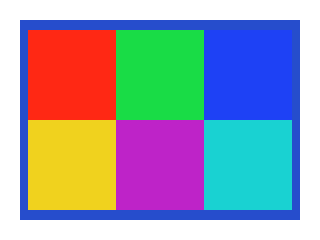
MIT input / fresh raw output PDF.js 6.5.438 / Node Canvas MIT input / fresh raw output OneImage e43ee26 baseline MIT input / fresh raw output decode-inverted-gray Image Decode inversion. Original MIT PDF
MuPDF 1.26.11 MIT input / fresh raw output PDFium 153.0.7999.0 MIT input / fresh raw output PDF.js 6.5.438 / Node Canvas 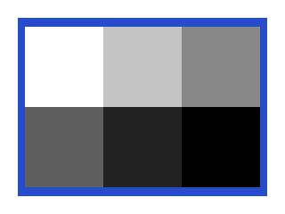
MIT input / fresh raw output OneImage e43ee26 baseline MIT input / fresh raw output rgb-nearest Magnified RGB image with Interpolate false. Original MIT PDF
MuPDF 1.26.11 MIT input / fresh raw output PDFium 153.0.7999.0 MIT input / fresh raw output PDF.js 6.5.438 / Node Canvas MIT input / fresh raw output OneImage e43ee26 baseline MIT input / fresh raw output rgb-smoothed Magnified RGB image with Interpolate true. Original MIT PDF
MuPDF 1.26.11 MIT input / fresh raw output PDFium 153.0.7999.0 MIT input / fresh raw output PDF.js 6.5.438 / Node Canvas 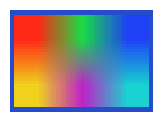
MIT input / fresh raw output OneImage e43ee26 baseline MIT input / fresh raw output stencil-checks ImageMask polarity and current nonstroking color. Original MIT PDF
MuPDF 1.26.11 MIT input / fresh raw output PDFium 153.0.7999.0 MIT input / fresh raw output PDF.js 6.5.438 / Node Canvas 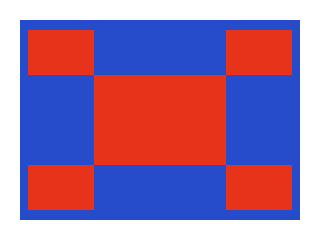
MIT input / fresh raw output OneImage e43ee26 baseline MIT input / fresh raw output inline-rgb-stripes Inline ASCIIHex RGB samples. Original MIT PDF
MuPDF 1.26.11 MIT input / fresh raw output PDFium 153.0.7999.0 MIT input / fresh raw output PDF.js 6.5.438 / Node Canvas MIT input / fresh raw output OneImage e43ee26 baseline MIT input / fresh raw output inline-gray-stripes Inline Gray samples and BPC. Original MIT PDF
MuPDF 1.26.11 MIT input / fresh raw output PDFium 153.0.7999.0 MIT input / fresh raw output PDF.js 6.5.438 / Node Canvas MIT input / fresh raw output OneImage e43ee26 baseline MIT input / fresh raw output clip-nonzero Nested rectangles with W clip rule. Original MIT PDF
MuPDF 1.26.11 MIT input / fresh raw output PDFium 153.0.7999.0 MIT input / fresh raw output PDF.js 6.5.438 / Node Canvas MIT input / fresh raw output OneImage e43ee26 baseline MIT input / fresh raw output clip-evenodd Nested rectangles with W* clip rule. Original MIT PDF
MuPDF 1.26.11 MIT input / fresh raw output PDFium 153.0.7999.0 MIT input / fresh raw output PDF.js 6.5.438 / Node Canvas MIT input / fresh raw output OneImage e43ee26 baseline MIT input / fresh raw output dash-round-cap Dashed stroke cap geometry. Original MIT PDF
MuPDF 1.26.11 MIT input / fresh raw output PDFium 153.0.7999.0 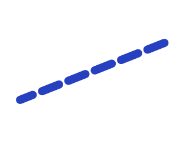
MIT input / fresh raw output PDF.js 6.5.438 / Node Canvas MIT input / fresh raw output OneImage e43ee26 baseline MIT input / fresh raw output dash-square-cap Dashed stroke cap geometry. Original MIT PDF
MuPDF 1.26.11 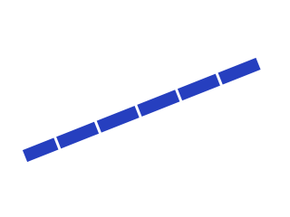
MIT input / fresh raw output PDFium 153.0.7999.0 MIT input / fresh raw output PDF.js 6.5.438 / Node Canvas MIT input / fresh raw output OneImage e43ee26 baseline 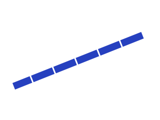
MIT input / fresh raw output zero-length-dash-on Zero-length round cap at on dash phase. Original MIT PDF
MuPDF 1.26.11 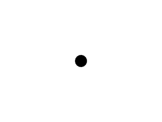
MIT input / fresh raw output PDFium 153.0.7999.0 MIT input / fresh raw output PDF.js 6.5.438 / Node Canvas MIT input / fresh raw output OneImage e43ee26 baseline MIT input / fresh raw output crop-rotation-0 Translated CropBox and rotation 0. Original MIT PDF
MuPDF 1.26.11 MIT input / fresh raw output PDFium 153.0.7999.0 MIT input / fresh raw output PDF.js 6.5.438 / Node Canvas MIT input / fresh raw output OneImage e43ee26 baseline MIT input / fresh raw output crop-rotation-90 Translated CropBox and rotation 90. Original MIT PDF
MuPDF 1.26.11 MIT input / fresh raw output PDFium 153.0.7999.0 MIT input / fresh raw output PDF.js 6.5.438 / Node Canvas MIT input / fresh raw output OneImage e43ee26 baseline MIT input / fresh raw output crop-rotation-180 Translated CropBox and rotation 180. Original MIT PDF
MuPDF 1.26.11 MIT input / fresh raw output PDFium 153.0.7999.0 MIT input / fresh raw output PDF.js 6.5.438 / Node Canvas MIT input / fresh raw output OneImage e43ee26 baseline MIT input / fresh raw output crop-rotation-270 Translated CropBox and rotation 270. Original MIT PDF
MuPDF 1.26.11 MIT input / fresh raw output PDFium 153.0.7999.0 MIT input / fresh raw output PDF.js 6.5.438 / Node Canvas MIT input / fresh raw output OneImage e43ee26 baseline MIT input / fresh raw output alpha-painted-backdrop Constant alpha over explicit colored background. Original MIT PDF
MuPDF 1.26.11 MIT input / fresh raw output PDFium 153.0.7999.0 MIT input / fresh raw output PDF.js 6.5.438 / Node Canvas MIT input / fresh raw output OneImage e43ee26 baseline MIT input / fresh raw output blend-empty-backdrop Unpainted PDF backdrop is transparent before display background. Original MIT PDF
MuPDF 1.26.11 MIT input / fresh raw output PDFium 153.0.7999.0 MIT input / fresh raw output PDF.js 6.5.438 / Node Canvas MIT input / fresh raw output OneImage e43ee26 baseline MIT input / fresh raw output multiply-painted-backdrop Multiply over an explicit RGB backdrop. Original MIT PDF
MuPDF 1.26.11 MIT input / fresh raw output PDFium 153.0.7999.0 MIT input / fresh raw output PDF.js 6.5.438 / Node Canvas MIT input / fresh raw output OneImage e43ee26 baseline MIT input / fresh raw output isolated-group Isolated transparency group, knockout False. Original MIT PDF
MuPDF 1.26.11 MIT input / fresh raw output PDFium 153.0.7999.0 MIT input / fresh raw output PDF.js 6.5.438 / Node Canvas MIT input / fresh raw output OneImage e43ee26 baseline MIT input / fresh raw output knockout-group Isolated transparency group, knockout True. Original MIT PDF
MuPDF 1.26.11 MIT input / fresh raw output PDFium 153.0.7999.0 MIT input / fresh raw output PDF.js 6.5.438 / Node Canvas MIT input / fresh raw output OneImage e43ee26 baseline MIT input / fresh raw output luminosity-soft-mask Luminosity soft mask values. Original MIT PDF
MuPDF 1.26.11 MIT input / fresh raw output PDFium 153.0.7999.0 MIT input / fresh raw output PDF.js 6.5.438 / Node Canvas MIT input / fresh raw output OneImage e43ee26 baseline MIT input / fresh raw output alpha-soft-mask Alpha soft mask values. Original MIT PDF
MuPDF 1.26.11 MIT input / fresh raw output PDFium 153.0.7999.0 MIT input / fresh raw output PDF.js 6.5.438 / Node Canvas MIT input / fresh raw output OneImage e43ee26 baseline MIT input / fresh raw output axial-gradient Analytic Type2 function in axial-gradient. Original MIT PDF
MuPDF 1.26.11 MIT input / fresh raw output PDFium 153.0.7999.0 MIT input / fresh raw output PDF.js 6.5.438 / Node Canvas MIT input / fresh raw output OneImage e43ee26 baseline MIT input / fresh raw output radial-gradient Analytic Type2 function in radial-gradient. Original MIT PDF
MuPDF 1.26.11 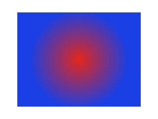
MIT input / fresh raw output PDFium 153.0.7999.0 MIT input / fresh raw output PDF.js 6.5.438 / Node Canvas 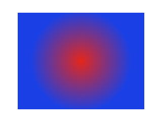
MIT input / fresh raw output OneImage e43ee26 baseline 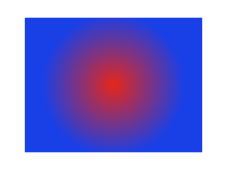
MIT input / fresh raw output colored-pattern Tiling pattern PaintType 1. Original MIT PDF
MuPDF 1.26.11 MIT input / fresh raw output PDFium 153.0.7999.0 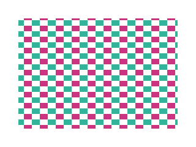
MIT input / fresh raw output PDF.js 6.5.438 / Node Canvas MIT input / fresh raw output OneImage e43ee26 baseline MIT input / fresh raw output uncolored-pattern Tiling pattern PaintType 2. Original MIT PDF
MuPDF 1.26.11 MIT input / fresh raw output PDFium 153.0.7999.0 MIT input / fresh raw output PDF.js 6.5.438 / Node Canvas 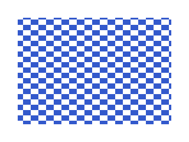
MIT input / fresh raw output OneImage e43ee26 baseline MIT input / fresh raw output type3-outlined-shapes Self-authored Type3 glyph procedures; uncolored d1. Original MIT PDF
MuPDF 1.26.11 MIT input / fresh raw output PDFium 153.0.7999.0 MIT input / fresh raw output PDF.js 6.5.438 / Node Canvas MIT input / fresh raw output OneImage e43ee26 baseline MIT input / fresh raw output type3-colored-shapes Self-authored Type3 glyph procedures; colored d0. Original MIT PDF
MuPDF 1.26.11 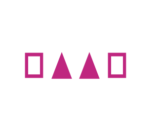
MIT input / fresh raw output PDFium 153.0.7999.0 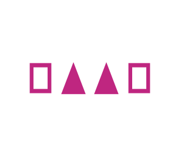
MIT input / fresh raw output PDF.js 6.5.438 / Node Canvas 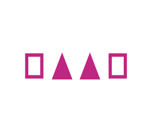
MIT input / fresh raw output OneImage e43ee26 baseline MIT input / fresh raw output annotation-visible Static annotation appearance and Hidden flag. Original MIT PDF
MuPDF 1.26.11 MIT input / fresh raw output PDFium 153.0.7999.0 MIT input / fresh raw output PDF.js 6.5.438 / Node Canvas MIT input / fresh raw output OneImage e43ee26 baseline MIT input / fresh raw output annotation-hidden Static annotation appearance and Hidden flag. Original MIT PDF
MuPDF 1.26.11 MIT input / fresh raw output PDFium 153.0.7999.0 MIT input / fresh raw output PDF.js 6.5.438 / Node Canvas MIT input / fresh raw output OneImage e43ee26 baseline MIT input / fresh raw output  MIT input / fresh raw output
MIT input / fresh raw output MIT input / fresh raw output
MIT input / fresh raw output MIT input / fresh raw output
MIT input / fresh raw output